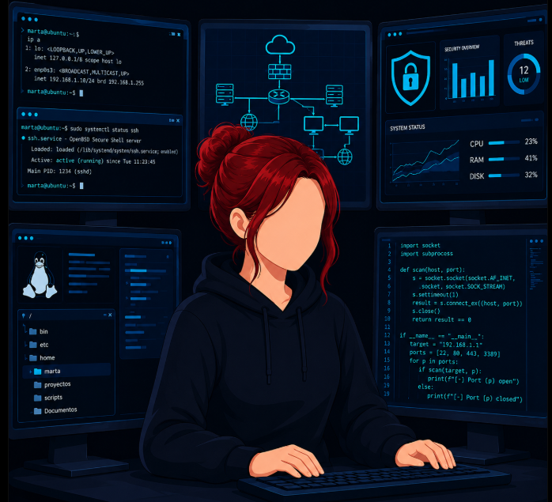
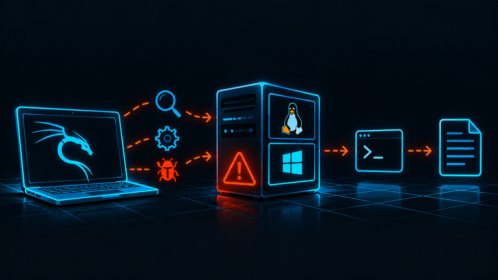

Hola, soy
Marta
Bargués.
Ciberseguridad · Sistemas · Redes · Cloud
Construyo laboratorios para aprender cómo funcionan los sistemas, cómo se atacan y cómo protegerlos. Combino mi formación en ASIR y ciberseguridad con proyectos prácticos ofensivos y defensivos.

Montar, probar,
entender y proteger.
Actualmente curso segundo de ASIR y he orientado mi formación hacia la ciberseguridad. Me interesan tanto la parte defensiva como la ofensiva, sin dejar de lado sistemas, redes e infraestructura.
Proyectos destacados

Laboratorio de simulación de Phishing
Entorno controlado con GoPhish, Postfix/Dovecot y Windows para simular y analizar una campaña de phishing.
→
Honeypot en AWS + Wazuh
Cowrie expuesto en AWS para registrar actividad maliciosa real y analizar los eventos mediante Wazuh.
→
Máquinas vulnerables & Writeups
Enumeración, explotación en laboratorio y documentación paso a paso de retos y máquinas vulnerables.
→Ciberseguridad
SOC · Pentesting · Hardening · Malware
Sistemas
Linux · Windows Server · Active Directory
Redes
VLAN · VPN · Routing · Firewalls
Cloud
AWS · Azure · Infraestructura
Un camino que sigue creciendo.
Mi formación ha ido sumando sistemas, redes y ciberseguridad, combinando base técnica, especialización y práctica.
¿Hablamos?
Abierta a nuevas oportunidades profesionales en ciberseguridad, sistemas y redes, con ganas de seguir aprendiendo y creciendo en el sector IT.
Contactar →$ status
→ OPEN TO WORK
$ focus
→ security · systems · networks
$